11/25/21
In this practical you will learn how to load geospatial data into ArcMap via the web, making use of WMS (Web Map Service) and WCS (Web Coverage Service) standards.
By the end of this class you should be able to:
We are going to start by loading some data from the NASA Socioeconomic Data and Applications Centre, who provide a lot of regional and global geospatial datasets via their WMS service. Much of the data they provide can also be downloaded from their website, but by using the WMS service we can grab lots of data quickly and explore it within our GIS system.
We are going to explore some global data, including things like fertiliser use, urban growth and soil types. We can see some of the metadata about these datasets by visiting this page. Here we can see some information about how the data was produced, how we should cite the data and some examples of the dataset.
Click on the link on the left hand side of the page called Map Services to bring up the WMS details:
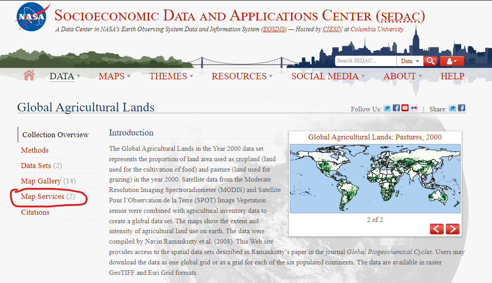
On this page we can see the information needed to complete our WMS query. There are links to view the data in a web browser, but we want to load these data into ArcMap. Copy the URL out of the code block:
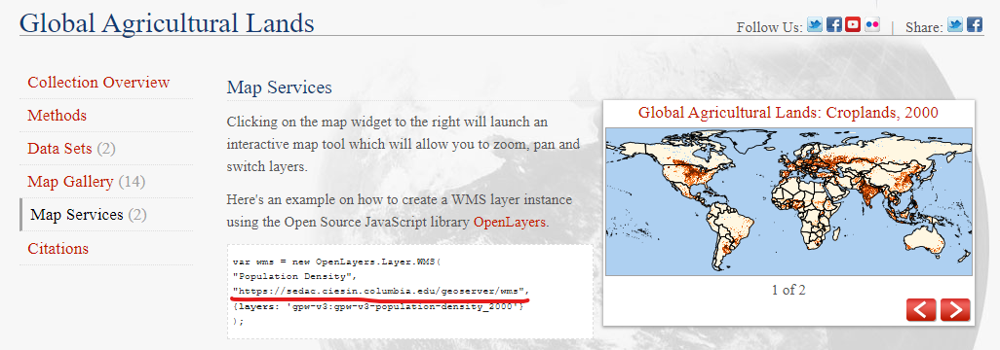
The way we find WMS URLs varies depending on how people have designed their websites and data repositories, but we can usually find them listed under something similar to what we have seen above.
Open a new ArcMap project, and click on the Add Data button. Click on the up one level button until it is greyed out:
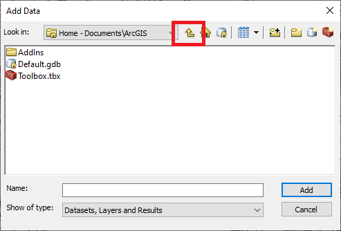
Here, we will see a number of different options for types of dataset that we can load. Double click on GIS Servers, and a series of options for different kinds of Web GIS data will pop up. After the lecture, you should be familiar with some of these. Double click on Add WMS Server and a new window will pop up:
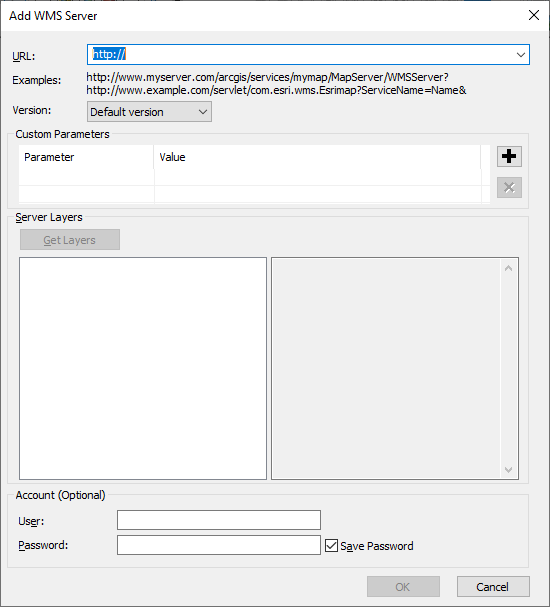
Paste the URL you copied from the SEDAC website into the URL field at the top of the window, leave all the other settings unchanged and click on the Get Layers button. After a few seconds, the empty box will populate with all of the different datasets available from this WMS:
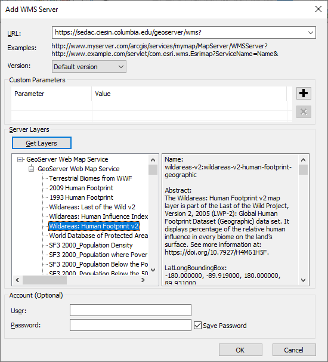
Take some time to scroll through some of the datasets, when you click on one, it pulls up some of the metadata about the dataset. Once you have finished exploring some of the data, click OK, which will create save this WMS connection in a similar way to how ArcMap saves a connection to a folder on your hard drive.
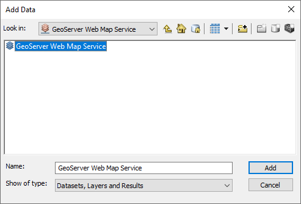
Double click on this folder and then single click on GeoServer Web Map Service and click on the Add button. (You can also double click on GeoServer Web Map Service to then select individual layers, but for now we will load everything.)
By default, ArcMap will only make the first 10 layers visible upon loading data using a WMS. Lets deselect those so that they are also not visible, before we begin loading any new data:
Scroll through the table of contents and toggle on the Phosphorous Fertilizer Application layer. After a few seconds a global map of fertiliser use should display in the map window. Zoom in to an area that interests you (e.g. Western Europe, North America, etc).
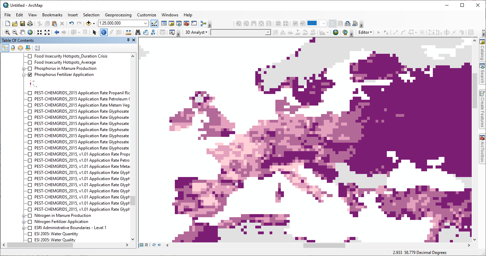
We can use the Indentify tool to interrogate this dataset, by clicking on pixels of interest to find out their value. Each click is sending an HTTP request to the WMS server for the information located at the clicked point.
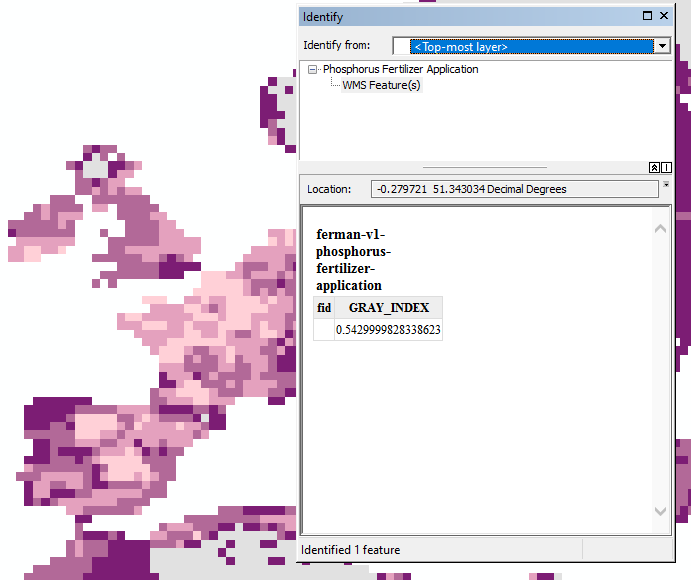
But what do the numbers mean? A cool thing about grabbing data using WMS, is that it is already categorised and has colour maps applied to it. Right click on the Phosphorous Fertilizer Application layer in the table of contents and select Properties. Navigate to the Styles tab and we can see the legend for the data, alongside the abstract which gives us additional context about the data we are looking at.
Close the window, and again right click on Phosphorous Fertilizer Application in the table of contents. This time, click on Add WMS Legend to Map, which will add a legend to your current map window, regardless of if you are in the data view or layout view.
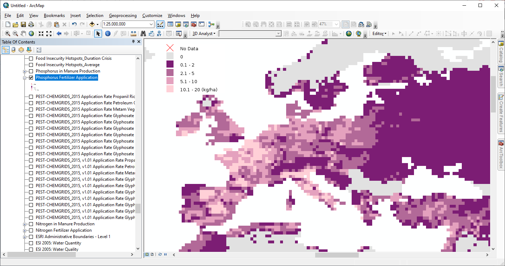
This is another feature of WMS, whereby a legend graphic is provided alongside each data layer. We cannot use the standard ArcMap legend tool to create legends in the layout view, as the data is not stored locally, but rather available on request from the WMS server.
We have a lot of layers in our table of contents, and it is difficult to keep track of them all. But fortunately we can filter out data we don’t want to use to make things easier. There are two ways of doing this, the first is to right click on GeoServer Web Map Service at the very top of the table of contents and select Properties. Here we have settings that will be applied to every layer within this group of layers. Navigate to the Layers tab:
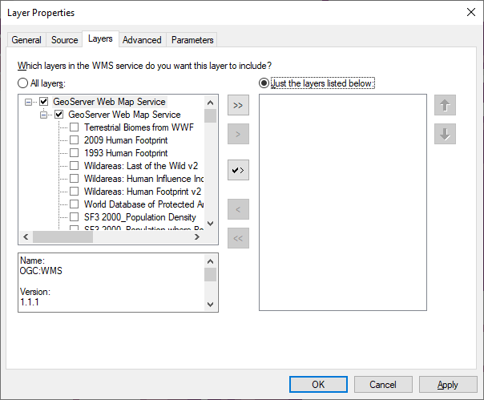
Click on the Just the layers listed below option, which will allow us to select individual layers from the main list, and, using the arrows, move them into our list of selected layers. Choose some layers you would like to have a look at and click on OK to confirm your selection and return to the main map window. We now have a much easier to manage set of layers within our table of contents. One problem, however, is that we cannot change the drawing order of our layers.
This leads us to the other way we can select individual layers. Right click on GeoServer Web Map Service in the table of contents, and remove these layers from the table of contents. Now click on Add Data, and navigate back to the WMS connection we made earlier. Instead of selecting GeoServer Web Map Service and clicking Add, double click on it to bring up a list of all of the layers contained within the WMS server.
Select the following layers (you can do this one at a time, or select them at once by holding the ctrl key while clicking):
We now have separate layers for each of our 2 WMS layers, but they both have the same name. Let’s rename them something descriptive so that we don’t get confused.

Now we can see the projected rates of urban expansion in the next decade, I have zoomed in to London to see how where we live is going to change.
I can add a basemap using ArcMap’s basemap feature (click the arrow beside the Add Data button, and select Add Basemap...) so that we can see the current outline of cities. So that we can see the basemap underneath our WMS data, we need to adjust the transparency of our urban expansion layer. Right click on this layer, and select Properties and then navigate to the Advanced tab. Here, there is a slider we can adjust to make the layer transparent, and allow the basemap to show through underneath.
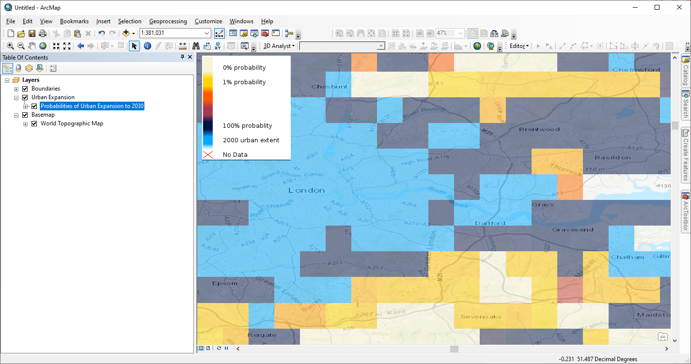
Using the skills that you have developed so far in this practical, load some other WMS layers from the SEDAC servers, and create a map showing some of that data. Be sure to include legends, scale bars, etc.
Have a look online for other datasets that are available via WMS, and practice loading and exploring these data. Some starting points could include:
When the OGC designed these specifications, they expected that by now, the vast majority of GIS work would be done via the web. Although this is in some ways true, the advances in cloud computing, the reductions in costs of powerful computers and the open data movement have made the use of the other OGC standards much less common.
The limitation of WMS is that we cannot analyse the data being served, as we are only supplied with static images of the data, and responses to individual queries (e.g. what is the value at pixel x,y?). This limitation should be addressed by WCS servers, which allow the transfer of datasets via HTTP protocols and the subsequent analysis of those datasets locally. However, the ease of sharing data via websites means that it is less common for people to provide free WCS servers for data. It is reasonably common for businesses to provide data to customers via paid access to a WCS, as these services allow the business to track data usage.
The USGS, does provide some of its data via WCS, and these data are bundled up into layer files that we can download, rather than having to input URLs. We can find some of these layer files from the US National Map Service:
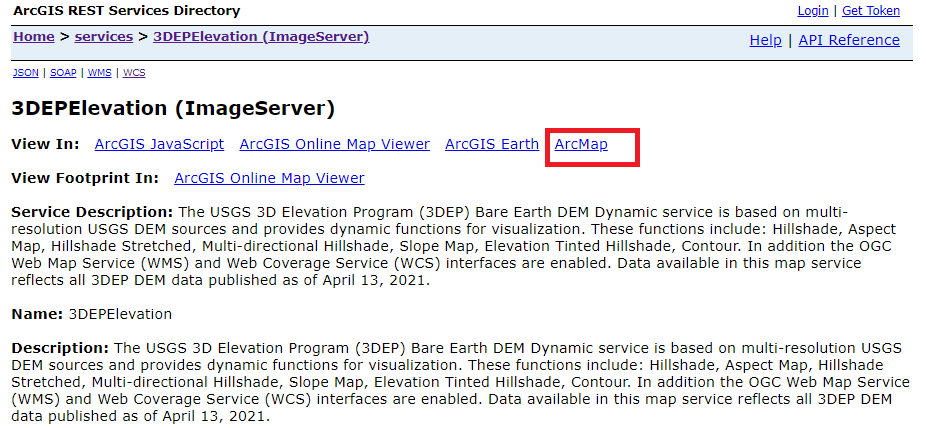
Click on the ArcMap link to download a layer file that points to these data, supplied via WCS.
Load this layer into a new ArcMap document, just as you would any other raster or shapefile. After a few seconds, a hillshade of the USA should appear. But because this is data being supplied via a WCS, we can request derivative datasets. Right click on the layer in the table of contents and select Properties, navigate to the Processing Templates tab:
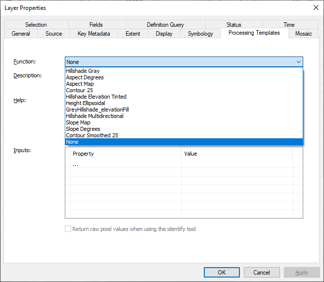
Here, we can request different derivative datasets using the Function dropdown menu, to give us access to slope, aspect and contour data. In each case all of the processing to create these layers is done on the USGS servers, only for the data displayed in your map window. If you scroll the map, a new WCS query is sent off for the new map extent. This is really useful if you don’t have a powerful computer to process data on!
We can also select None as our function, which gives us the raw DEM. This then allows us to use all of the usual tools we have within ArcMap to analyse DEM data. For example, I can use the 3D Analyst Toolbox (remember to activate the extension so you can use the toolbox!) to create elevation profiles:
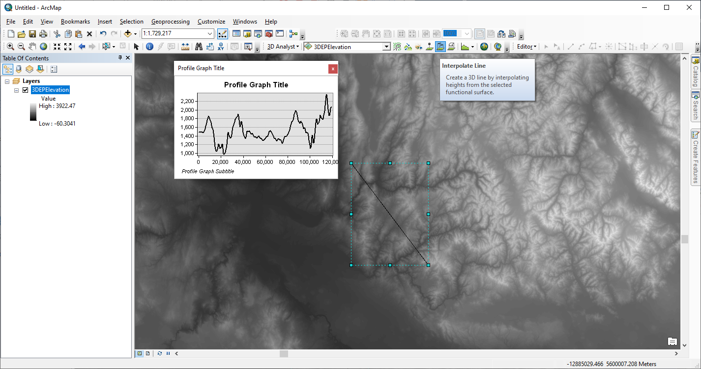